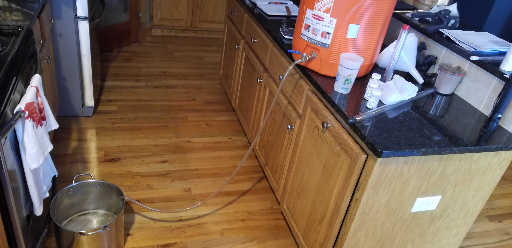
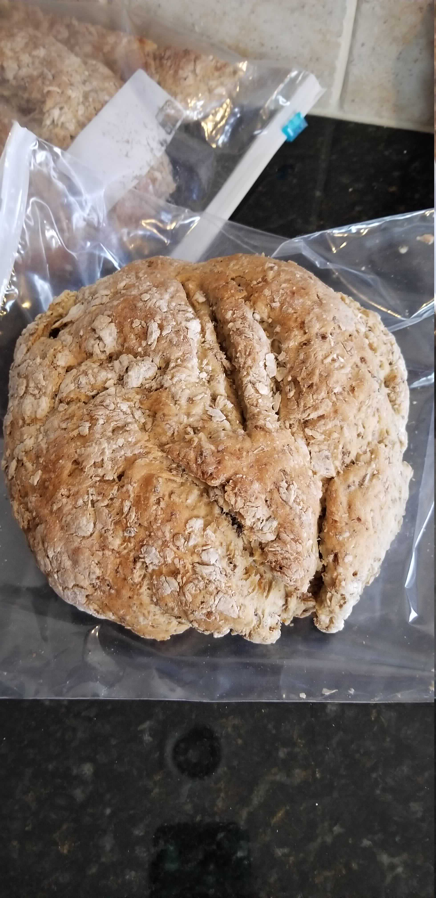
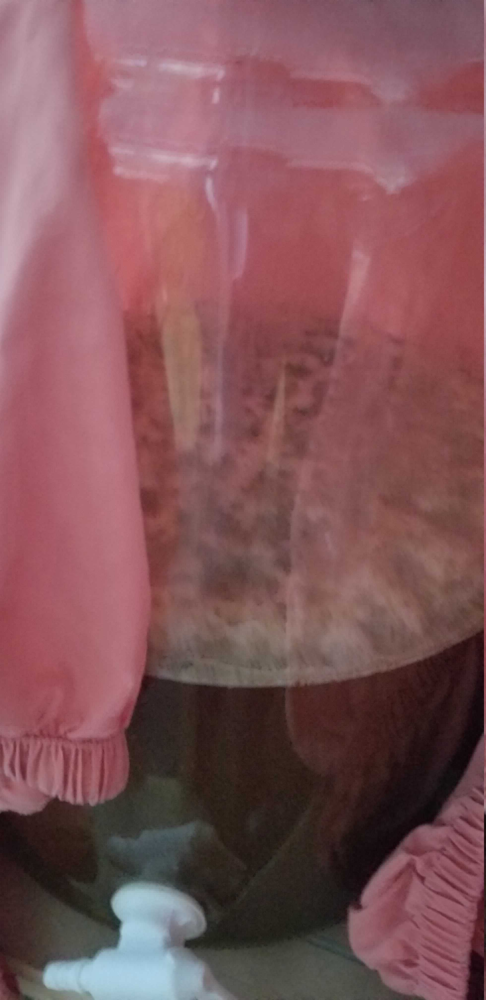
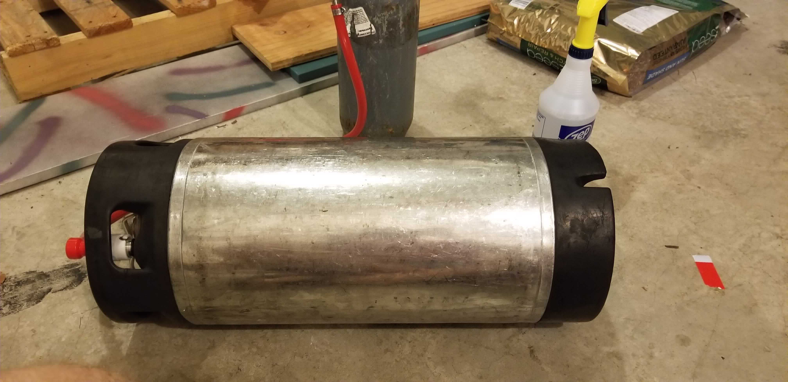
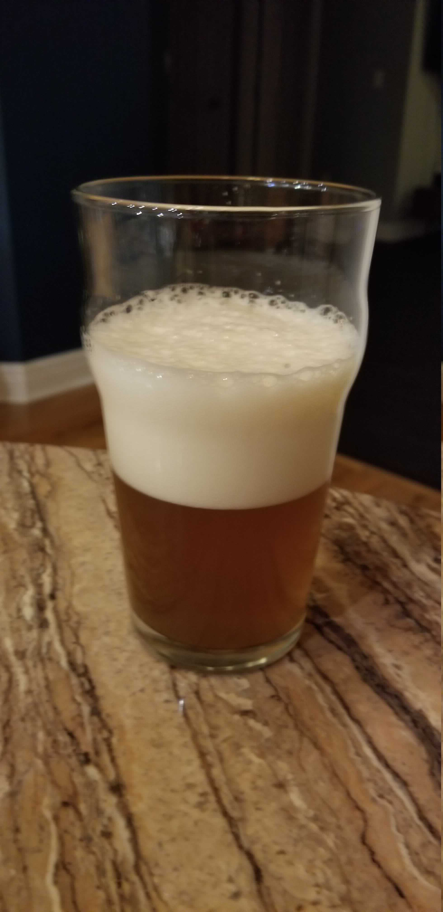

Lately I’ve beeing discussing with a brewing buddy that we need to make an easy to drink beer. I’ve been interested in California Common for a couple of reasons: I hadn’t had one, and I still don’t have an appropriate place to lager beer. Since the whole point of the California Common is to brew an ale with lager qualities, this seemed like the perfect time to brew one.
General Information
| Batch Size | 3 Gal |
| Batch Type | All Grain |
| Batch Number | 1 |
| Expected OG | 52 |
| Actual OG | 38* |
| Expected FG | 13 |
| Actual FG | 16 |
* Missed the OG by quite a bit on this one, will explain further down.
Recipe: Simple California Common
Schedule:
| Segment | Time |
|---|---|
| Mash | 1 Hour |
| Boil | 1 Hour |
Ingredients
Ingredients are per 1 gallon.
| Amount | Ingredient |
|---|---|
| 1.95 lb | Pale Two Row |
| 0.208 lb | American Caramel Malt 40°L |
| 0.06 oz | Northern Brewer 7.8% AA (bittering)* |
| 0.42 oz | Northern Brewer 7.8% AA (aroma)* |
| 1 package | Mangrove Jack’s M54 California Lager Yeast |
| 1/2 tab | Whirlflocc (added at 5 min) |
* Substituted Chinook for availability
Hop Schedule
| Boil Time | Amount | Type |
|---|---|---|
| 60 min | 0.06 oz (All) | Northern Brewer (bittering) |
| 15 min | 0.21 (1/2) | Northern Brewer (aroma) |
| 1 min | 0.21 (Remainder) | Northern Brewer (aroma) |
Mash
So this is where things went a bit wrong. General mash plan:
- Mash at 155°F
- Single infusion with strike water of ~165°F
- Set and forget for an hour
What actually happened:
- Strike water was closer to ~170°, so had to drop the water temp a bit with some tap water. Not a big deal, still ended up with the right mash temp. I was briefly concerned I denatured the mash proteins but apparently that takes a bit longer than my response time
- Set and forgot for an hour.
Notice that this includes nothing about PH maintenance. That’s because I didn’t do any. All of the minerals came from the few cups of tap water I used to adjust the temperature since I use Reverse Osmosis water when brewing. I’ve used RO water since I started brewing at home because my tap water has a strong chlorine smell. This was fine with extract since PH maintenance isn’t a thing when you’re only boiling wort. In fact, until this screw up I haven’t looked much at mash PH adjustments before.
My previous beer, the Thanksgiving Winter Warmer probably didn’t suffer from this as much because I used a pre-mixed packet of seasoning salts for it (I assume) and I built in an escape hatch by adding molasses to hit the target OG.

Since this beer is less dark than my previous one I went ahead and passed a few cup fulls of the first runnings back through the grain bed to attempt to clarify it a bit more.
Boil
This was a pretty standard boil, just 60 minutes. This was a super simple recipe and there wasn’t much at all to do during the boil except to clean and sanitize. I actually went ahead and started working on some beer bread mixture in the mean time.

Despite being a bit pale, the bread turned out really well! I followed this recipe from the American Homebrewers Association. The grilled cheese I made with this tasted like a grilled beer cheese, even with singles.
Cooling
I don’t normally include Cooling in these posts, but I splurged and bought an immersion chiller and this was my first change to use it.
So this looks super sanitary - I swear the bathroom is cleaned somewhat regularly. The day I brewed was still pretty cold out (too cold for the outdoor spigot) and the immersion chiller had no way connect this to my kitchen faucet. Instead we put an adapter on the bathroom faucet and carefully chilled in there. This cooled the wort down in minutes, rather than the hour an ice bath and whirlpool could take.
Fermentation
The dry yeast packet was pitched directly into the 72°F wort from the package. Oddly enough, even on the manufacturer’s website I couldn’t find any other details regarding rehyrdrating, which I would typically do. At the time I figured it would be fine since it was 3 gallons and under gravity.
This was fermented in my dining room between ~73°F and ~76°F for 8 days. To keep it warm and help with the temperature fluctuations I wrapped the carboy in a sheet.
I was actually surprised at the temperatures required for this yeast strain. I would have expected somewhere inthe 60s given the lager qualities it is supposed to have, but I still have a ton to learn about yeast.

Fermentation went well enough. Pretty active after about 30 hours, so not the strongest start, but expected without rehydrating the yeast. After 5 days I started checking the gravity. Between day 7 and 8 the gravity only dropped 1-2 points, so I called it.
Kegging
This beer I kegged and force carbonated. I’ve read that california commons are typically better fresh and with a fair amount of carbonation, and I was ready to drink this one soon.

Unlike my last beer, this wasn’t the set-and-forget method of force carbonation. That may have worked OK except that following fermentation the temperature warmed up by about 20° outside, so set-and-forget was going to take waay longer than I wanted. Instead I rolled the keg around for a few minutes and set the PSI to 14.
I also cold crashed this for clarity in the keg during force carbonation for two days. This was my first cold crash. I don’t have a fridge that can fit a keg, so I filled up a cooler I have with 40 lbs of ice. I think the beer came out a bit clearer as a result.
Result
Appearance
The beer turned out a golden/amber color with a pretty nice head on top.

It’s still fairly murky. Planning on finding more ways to clarify in the future.
Aroma
The aroma isn’t super strong on this one. I notice faint toasty notes in the sweet malt. The hops come across faintly as wood.
Flavor
I’ve been drinking this one fairly cold. Its an interesting experience, the hop bitterness rolls over the tongue with small amounts of pine. After spreading across the palate the malt comes through the center as a sweet toast.
Mouthfeel
This one has a medium body, probably one of the fuller mouth feels I’ve brwed. The carbonation plays nicely along with this. One thing I love about this beer is the foam lingers through the whole glass, unlike my other brews, almost like the foam from a root beer float on top.
Comparison to the Original
After brewing this I went and bought the original California Common - Anchor Steam Beer and tried them side-by-side.
Appearance
Right off the bat the clarity difference is very obvious. My common needs some cleaning up. Secondly, I was surprised to find much less head on the original. Apparently the name steam comes from the brewing process, and not the carbonation (which I had read elsewhere). Good to know!
Aroma
The Steam beer has a very interesting aroma. It’s almost a little aklaline , like the beer is minerally. Besides that the malt comes across as caramel and the hops as woody again.
Flavor
The alkalinity continues. Definitely tastes minerally. The malt comes across as toasted caramel. The hops appear on the finish with some refreshing bitterness and light woodiness.
Things To Do Better
Despite some issues, I actually really enjoyed this beer. I set out to make an easy drinker and this one certainly is. It’s also less than 4% alchohol, so you can drink it all night without any worries.
I plan on brewing this again, hopefully in the summer, but with a few tweaks.
Mash pH
The main issue in this beer was the Mash efficiency. For my next beer I plan on bringing the mash PH down to the 5.2 - 5.6 range. In the mean time I’ve built myself a small water treatment kit for the nxext one.
Clarity
For this beer I made a a few small attempts at clarification, but it came up a little short. One thing I may do is cold crash a bit longer. Two days helped some, but I’ve seen where others have done longer with some success.
Other methods include using gelatin to filter out particles in the beer. Unfortunately I can’t use gelatin, but may look into some alternatives.